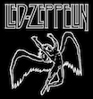
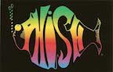

My favorite genres
Classic Rock
I love classic rock like the Beatles, Led Zeppelin, Aerosmith, and the Cream. Just to name a few.
Included in the classic rock genre, is my love of blues, especially electric blues and psychedlic blues.
Jam Bands
Phish is my favorite band overall. They have been around for 30 years. I got to see them 3 nights in a row last summer in Chicago. It was SO awesome!
I also love The Grateful Dead, the Allman Brothers and Jimi Hendrix. Anyone who plays a lot of music is good for me.
Reggae

I would have to say that my love of reggae music started with Sublime. They were an awesome reggae/punk band back in the early to mid '90's.
I then started listening to more Bob Marley and even his son Damien Marley. Through Sublime, though, I found out about other reggae artists like Toots and the Maytals, and Peter Tosh.
Guitar
I got my first guitar when I was 12 years old. I wanted to be a rock star. I remember strumming it before I even knew one thing about how to actually play it. I was just excited by the noise. My mom had to tell me that the amp was called an "amp"
I am left-handed and I do almost everything with my left hand, but when I got my first guitar it was right handed. My mom convinced me that it would be easier for me to make the chords with my left hand and strum with my right. So I played right handed for two years....then I switched.
Around the same time that I started playing guitar I also started listening to Nirvana. I became a huge fan of Nirvana and Kurt Cobain. Of course, Kurt Cobain played guitar left handed. As time went on, I also started to listen to Jimi Hendrix a lot more, another left handed guitar player whom I admired.
So considering the fact that I am left-handed, and two of my favorite musicians at the time were left-handed, I knew I had to make the switch. I started out by turning my guitar upside down and just forming the chords wiht my right hand. Of course I couldn't play anything becuase the strings were upside down. I just wanted to get the feeling of making the chords with my right hand. Eventually I bought a left-handed black fender squire stratocaster and I still have that guitar today.